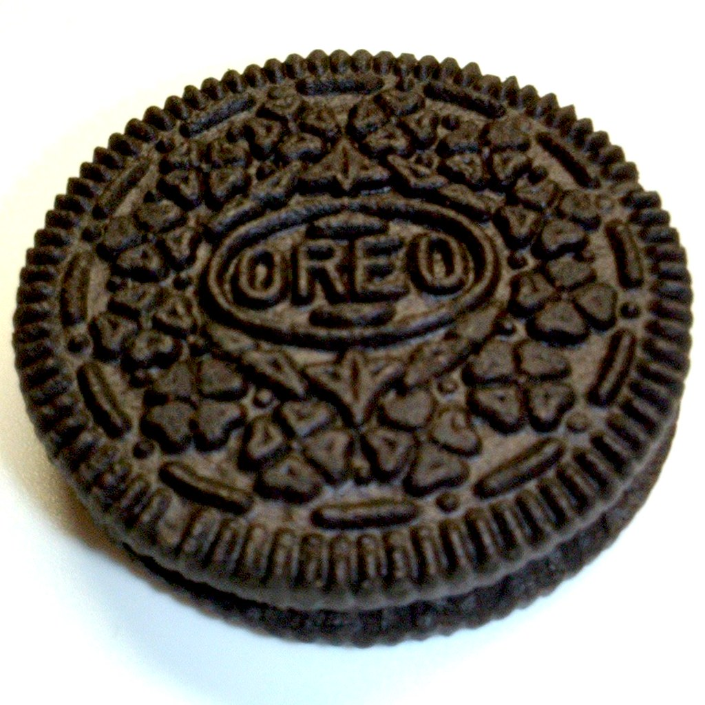

How the Media Worsens Pollution
This Blog Post explains the issue of pollution in our oceans, and the false information that the media is feeding us.

Ted Talkers
ThisPodcast is a great listen of you would like to improve your ability to analyze Ted Talks and learn some tricks to becoming a great speaker

Easy Oreo Dip for Everyone!
One of my all time favoriterecipies is this Oreo dip! It is super quick and easy to make!

Another Resource
This is an amazing to donate too. They worktowards clearing the ocean of plastic and other trash that harms our environment every day.